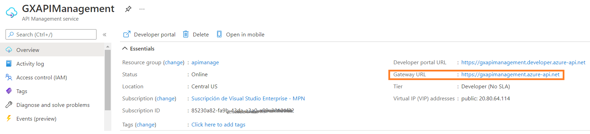
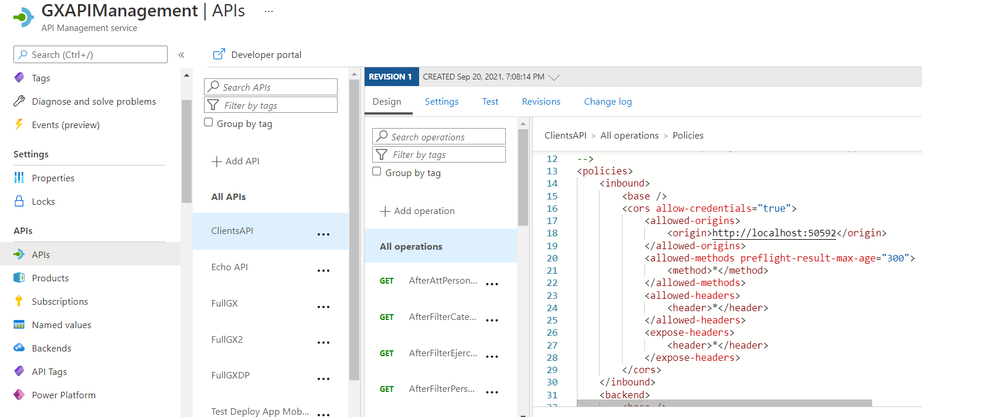

Deploy mobile services to Azure Serverless using API Management (GeneXus 17 upgrade 8)
When deploying mobile app services to an Azure Serverless architecture, you use the "Microsoft Azure Serverless (backend services)" deployment target.
This document explains details about the deployment to Azure API Management (APIM), which is optional.
First, note that you have to set the Generate OpenAPI interface property to Yes and OpenAPI version property to either 2.0 or 3.0, and do a rebuild all in the model, previous to deploying to Azure Serverless.
The following error is shown if the property is no set:
"Error: All the objects of the Deployment unit must have Generate OpenAPI Interface property set to Yes. Alternatevely, set to Yes the property at the generator level, and do a rebuild all."
Before going on, read Azure Http-triggered functions.
To deploy to APIM, you need to configure the following deployment properties:
|
APIM service name |
Name of the API Management service instance. |
|
APIM resource group |
Azure API Management resource group. |
|
API Identification |
API revision identifier. It must be unique in the current API Management service instance. |
|
API display name |
Display name of this API. |
|
API backend service URL |
Absolute URL of the backend service implementing this API. It corresponds to the URL given for the Azure function app, plus "/rest": E.g: https://MyFunctionApp.azurewebsites.net/rest |
|
API path |
Relative URL uniquely identifying this API and all of its resource paths within the API Management service instance. E.g: Clients |
|
API subscription required |
If true, the API requires a subscription key on requests. The recommended value for services being called from mobile clients is False. |
Example
Consider the following deployment configuration:
With the above settings, the API can be seen as follows in the Azure portal:
To run the app and use the services just deployed, configure the Services URL property as follows:
Note that the URL is the Gateway URL shown in the Azure portal for the APIM service, followed by the API path you configured on deployment (the /rest suffix in the URL is added automatically to make the calls).

Angular applications
In the case of Angular applications, you have to configure the CORS.
Go through the API inbound policies of APIM, on the Azure portal, and configure the CORS Allow Origin policy for the machine where the Angular app is running.

Example:
<cors allow-credentials="true">
<allowed-origins>
<origin>http://localhost:62560/</origin>
</allowed-origins>
<allowed-methods preflight-result-max-age="300">
<method>*</method>
</allowed-methods>
<allowed-headers>
<header>*</header>
</allowed-headers>
<expose-headers>
<header>*</header>
</expose-headers>
</cors>
For more information on this topic, read the Azure documentation.
If you do not use APIM, configure the CORS at the Function App CORS setting (located at the left hand side menu) of the Function App.

Availability
APIM support is available since GeneXus 17 upgrade 7.